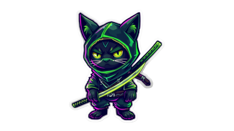

Em uma pequena vila, quatro gatos viviam como heróis. <Gato Bilbo>🐈, o mais agressivo e louco, estava sempre pronto para atacar qualquer ameaça com coragem desenfreada. <Gato Oliver>🐈, arteiro e cheio de energia, corria de um lado para o outro, fazendo travessuras para desviar a atenção dos inimigos. <Gato Sirius>🐈, calmo e medroso, preferia observar antes de agir, sempre evitando confrontos diretos, mas sua sabedoria era essencial para a estratégia. <Gato Thithi>🐈, soberbo e orgulhoso, acreditava ser o líder e se orgulhava de sua grandeza, guiando o grupo com seu ego inabalável. Juntos, equilibravam suas qualidades e, apesar de suas diferenças, sempre venciam, provando que a diversidade fazia a força do time.
< > ® © ™ € ¢ ¥ £ δ Δ ↑ ↟ 🐈 